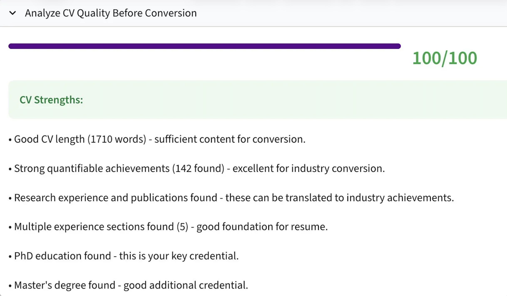
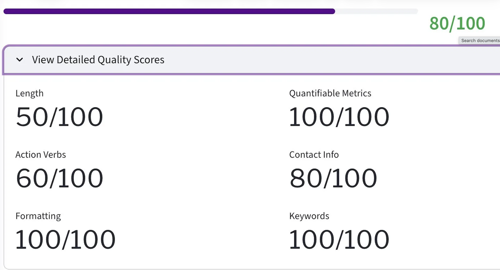

A two-stage NLP pipeline that compresses 5-10 page academic CVs into ATS-ready, one-page industry resumes.
Context
PhD students applying outside academia face a structural translation problem. The 5-10 page academic CV is built to demonstrate scholarly depth: long publication lists, granular teaching histories, conference presentations, dissertation committees. Industry hiring managers and ATS parsers want the opposite, a one-page document foregrounding quantified impact, transferable skills, and standardized formatting.
The CV-to-Resume Conversion Tool, deployed inside the Meridian career intelligence platform, automates this translation. Students paste a CV or upload a file. The tool scores quality across six dimensions, surfaces strengths and gaps, then applies a priority-weighted compression strategy to produce a clean industry resume in seconds. Adopted by 5,000+ NYU GSAS students with no ongoing staff intervention required.
Approach
Before any compression happens, the tool evaluates the input CV across six rubrics: length, action verb density, formatting cleanliness, contact information, quantifiable achievements, and keyword coverage. Each dimension returns a 0-100 score, surfaced alongside a qualitative strengths assessment. The user sees what is already working before changes are proposed, which builds trust in the conversion that follows.

The conversion engine applies a hierarchy of retention rules. High-priority dimensions (length, content prioritization, education, skills, language, ATS optimization) drive the structural transformation. Medium priority handles publications and research, where the top two or three are kept and condensed into impact-forward bullets. Low priority handles teaching and service, retained only when directly relevant to the target role.
Academic vocabulary is translated into industry-standard action verbs (Led, Developed, Analyzed, Implemented). Tables, decorative formatting, and complex layouts are stripped for ATS parser compatibility. Standard headers replace academic conventions. The output targets 500-700 words, which fits cleanly on a single page in standard fonts.

Impact
5,000+
Students reached across NYU GSAS
200+
Academic credential types covered in the translation library
0
Ongoing staff hours required per conversion
Try the tool inside Meridian.
Open Meridian →